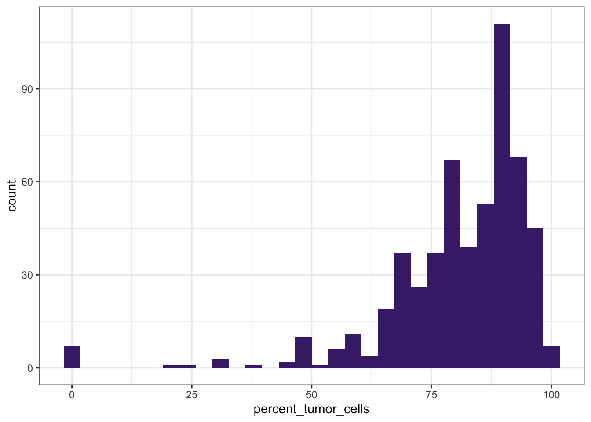
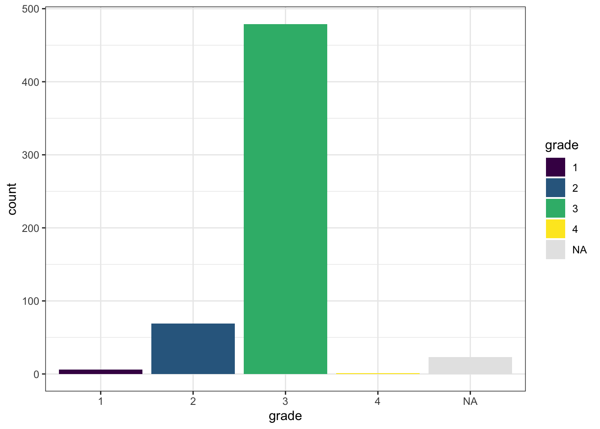
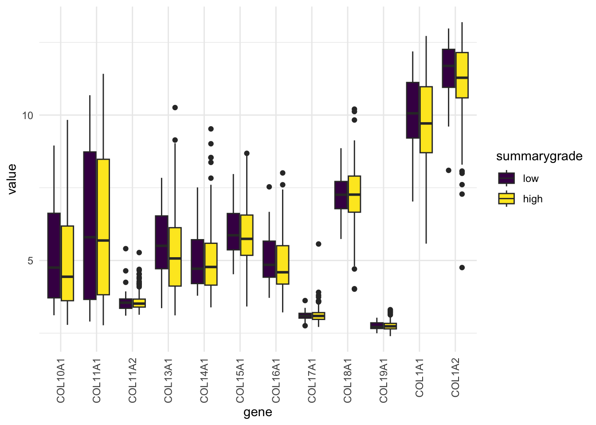

library(tidyverse)
# library(ggforce) Presentation 2: Summary Statistics and Data Wrangling
Now that we’ve cleaned our data, it’s time to dig deeper into the actual contents of our dataset. Exploratory Data Analysis (EDA) is an essential step in any data analysis or modeling workflow.
EDA is about getting an overview of your data before fitting it to any models. It helps us:
Understand distributions
Spot outliers
Reveal patterns
Explore relationships between variables
There are three broad ways to investigate variables:
Univariate – Examining one variable at a time.
Bivariate – Exploring relationships between two variables.
Multivariate – Looking at relationships among multiple variables.
Load Packages and Data
Let’s begin by loading the packages we’ll need for data wrangling and plotting:
Now, we load our dataset which was pre-processed and saved as an .RData file at the end of Presentation 1:
load("../data/Ovarian_comb_clean.RData")
# Quick peek at the structure and contents
class(df_comb)[1] "tbl_df" "tbl" "data.frame"str(df_comb)tibble [578 × 29] (S3: tbl_df/tbl/data.frame)
$ unique_patient_ID : chr [1:578] "TCGA-20-0987" "TCGA-23-1031" "TCGA-24-0979" "TCGA-23-1117" ...
$ sample_recode : chr [1:578] "Tumor" "Tumor" "Tumor" "Tumor" ...
$ summarygrade : Factor w/ 2 levels "high","low": 1 1 1 1 1 2 1 1 1 1 ...
$ summarystage : Factor w/ 2 levels "early","late": 2 2 2 2 2 2 2 2 2 2 ...
$ tumorstage : Factor w/ 4 levels "1","2","3","4": 3 4 4 3 4 3 3 4 3 3 ...
$ grade : Factor w/ 4 levels "1","2","3","4": 3 3 3 3 3 2 3 3 3 3 ...
$ age_at_initial_path_diagn: int [1:578] 61 60 53 42 45 78 74 73 45 45 ...
$ recurrence_status : Factor w/ 2 levels "norecurrence",..: 2 1 2 2 1 1 2 1 1 2 ...
$ days_to_death : int [1:578] 701 574 1264 1013 1446 61 789 84 2616 816 ...
$ vital_status : Factor w/ 2 levels "deceased","living": 1 1 1 1 1 1 2 1 2 2 ...
$ percent_normal_cells : int [1:578] 16 8 0 0 0 0 12 15 NA 0 ...
$ percent_stromal_cells : int [1:578] 1 5 25 NA 0 36 2 5 NA NA ...
$ percent_tumor_cells : int [1:578] 72 80 72 NA NA 64 84 72 NA NA ...
$ batch : Factor w/ 14 levels "9","11","12",..: 3 3 3 3 3 3 3 3 3 3 ...
$ percent_not_cancer_cells : int [1:578] 17 13 25 NA 0 36 14 20 NA NA ...
$ stage : chr [1:578] "3-high" "4-high" "4-high" "3-high" ...
$ dominant_cell_type : chr [1:578] "cancer_cells" "cancer_cells" "cancer_cells" NA ...
$ group : chr [1:578] "Late stage - Mature" "Late stage - Mature" "Late stage - Young" "Late stage - Young" ...
$ CXCL1 : num [1:578] 4.97 3.99 3.87 3.16 3.35 ...
$ CXCL10 : num [1:578] 9.91 6.61 10 9.24 7.86 ...
$ CXCL11 : num [1:578] 5.26 2.9 4.19 3.89 2.95 ...
$ CXCL12 : num [1:578] 5.44 6.31 4.19 9.07 5.1 ...
$ CXCL13 : num [1:578] 6.55 3.18 3.36 5.1 3.41 ...
$ CXCL14 : num [1:578] 3.07 2.71 2.77 6.2 5.13 ...
$ CXCL2 : num [1:578] 5.14 5.12 7.28 5.88 5.5 ...
$ CXCL3 : num [1:578] 3.72 3.76 3.88 3.5 3.69 ...
$ CXCL5 : num [1:578] 3.31 3.11 3.38 3.04 2.97 ...
$ CXCL6 : num [1:578] 3.17 2.95 2.9 3.08 2.58 ...
$ CXCL9 : num [1:578] 9.19 3.49 4.83 8.82 3.27 ...Depending on how we want to investigate the variables, there are different tools in your EDA toolkit we can employ:
Univariate Analysis
Histograms – Check distributions of numeric variables
Boxplots – Detect outliers and skewness
Bar charts – Explore frequency of categorical variables
Summary stats – Mean, median, standard deviation (SD), min, max, interquartile range (IQR)
Bivariate Analysis
Scatter plots – Explore relationships between two numeric variables
Correlation coefficients – Assess linear strength (e.g., Pearson’s r)
Contingency tables – Analyze relationships between categorical variables
Line graphs – Track trends over time
Data Overview and ggplot2 Recap
Let’s revisit some of the variables in the dataset and refresh our ggplot2 skills.
If you need a detailed refresher, refer to the From Excel to R: Presentation 3.
# Distribution of tumor cell percentage
ggplot(df_comb,
aes(x = percent_tumor_cells)) +
geom_histogram(bins = 30) +
theme_bw()
# Tumor percentage by summary grade
ggplot(df_comb,
aes(x = grade,
y = percent_tumor_cells,
fill = grade)) +
geom_boxplot() +
theme_bw() +
scale_fill_viridis_d(na.value = "grey50")
# Count with barplot
ggplot(df_comb,
aes(x = grade,
fill = grade)) +
geom_bar() +
theme_bw() +
scale_fill_viridis_d(na.value = "grey50")
These simple plots give us an initial overview of the distribution of some of the variables - on their own and stratified by groups.
Pipe into ggplot
Tired of cluttering your environment with dozens of intermediate data frames? There’s a solution: you can pipe (%>%) your filtered data directly into ggplot() without saving it first. When you do this, you don’t need to specify the data = ... argument inside ggplot() — the data is being piped into the function automatically.
df_comb %>%
filter(sample_recode == "Tumor") %>%
ggplot(aes(x = CXCL11,
y = CXCL10,
color = summarygrade)) +
geom_point() +
scale_fill_viridis_d(na.value = "grey50") +
theme_bw()
Plotting several dataframes
Sometimes we want to add extra layers of information to a plot — for example, combining raw data distributions with summary statistics.
In this case, we’ll create a violin plot to show the distribution of the age_at_initial_path_diagn values stratified by the summarygrade categories. At the same time, we want to overlay the mean age_at_initial_path_diagn value for each summarygrade category as a red point.
We start by summarizing our data to get the mean age_at_initial_path_diagn for each summarygrade category:
gene_mean <- df_comb %>%
group_by(grade) %>%
summarise(mean = mean(age_at_initial_path_diagn)) %>%
filter(!is.na(grade))
gene_mean# A tibble: 4 × 2
grade mean
<fct> <dbl>
1 1 50.2
2 2 58.4
3 3 60.0
4 4 51 Now we plot the distributions with geom_violin() and add the mean values using a second data frame in geom_point():
df_comb %>%
filter(!(is.na(age_at_initial_path_diagn) | is.na(grade))) %>%
ggplot(aes(x = grade,
y = age_at_initial_path_diagn,
fill = grade)) +
geom_violin() +
geom_point(data = gene_mean, aes(x = grade, y = mean), color = 'red', size = 3) +
scale_fill_viridis_d() +
labs(title = 'Age at Initial Pathologic Diagnosis by grade',
caption = 'Only one individual in grade 4.') +
theme_bw() 
geom_point(data = gene_mean) tells ggplot to use a different data frame for this layer — a powerful way to combine data sources in a single plot.
This makes it easy to visualize both variation and central tendency at the same time.
Plots are objects
Just like data frames, ggplot plots are R objects. You can assign them to variables and display them later:
awesome_plot <- df_comb %>%
filter(!(is.na(age_at_initial_path_diagn) | is.na(grade))) %>%
ggplot(aes(x = grade,
y = age_at_initial_path_diagn,
fill = grade)) +
geom_violin() +
geom_point(data = gene_mean, aes(x = grade, y=mean), color = 'red', size = 3) +
scale_fill_viridis_d() +
labs(title = 'Age at Initial Pathologic Diagnosis by grade',
caption = 'Only one individual in grade 4.') +
theme_bw() If R is being every pesky about showing you plots (e.g. if you want to display them in a loop) wrapping print() around the name of the plot object usually helps:
print(awesome_plot)
This is especially useful for creating multiple plots programmatically.
Formats: long and wide
The doctrine of ggplot is that every information you want to plot must be in a column. There is one column that describes the x-axis, one for the y-axis, and one for each additional aesthetic like color, size, shape, ect.
Now, let’s say we want to create a single plot and compare several CXCL gene expression levels across different categories.
In the current wide format (like most spreadsheets), each gene is stored in its own column:
| ID | CXCL1 | CXCL2 | CXCL3 | … |
|---|
This layout is fine for browsing spreadsheets, but to create the plot described above you’d have to write a separate plot for each gene/column — not efficient.
To plot and analyze more effectively, we need to reshape the data into long format, where each row represents a single observation:
| ID | gene | value |
|---|---|---|
| 1 | CXCL1 | 2.3 |
| 1 | CXCL2 | 1.9 |
| 2 | CXCL1 | 3.1 |
| … | … | … |
We can do this using pivot_longer():
The data can be reformatted to long format such that there is one line per gene per person. For this we use the pivot_longer function.
df_comb_long <- df_comb %>%
pivot_longer(cols = starts_with('CXCL'),
names_to = "gene",
values_to = "value")
df_comb_long %>% select(unique_patient_ID, age_at_initial_path_diagn, gene, value) %>% head() # A tibble: 6 × 4
unique_patient_ID age_at_initial_path_diagn gene value
<chr> <int> <chr> <dbl>
1 TCGA-20-0987 61 CXCL1 4.97
2 TCGA-20-0987 61 CXCL10 9.91
3 TCGA-20-0987 61 CXCL11 5.26
4 TCGA-20-0987 61 CXCL12 5.44
5 TCGA-20-0987 61 CXCL13 6.55
6 TCGA-20-0987 61 CXCL14 3.07# one line per gene per person
nrow(df_comb)[1] 578nrow(df_comb_long)[1] 6358df_comb_long$gene %>% unique() %>% length() * nrow(df_comb)[1] 6358The Long Format is ggplot’s Best Friend
With the reshaped df_comb_long, we can now create one combined plot that shows distributions for all genes in a single ggplot call:
ggplot(df_comb_long,
aes(x = gene, y = value, fill = gene)) +
geom_boxplot() +
scale_fill_viridis_d() +
theme_minimal() 
Want histograms for all genes?
ggplot(df_comb_long,
aes(x = value)) +
geom_histogram(bins = 30) +
facet_wrap(vars(gene), nrow = 3) +
theme_minimal()
This plot gives us a histogram for each gene, all in one go.
No need to write separate plots manually.
Much easier to compare variables side-by-side.
More context: add color-stratification by summarygrade and compare distributions side-by-side:
ggplot(na.omit(df_comb_long),
aes(x = gene, y = value, fill = summarygrade)) +
geom_boxplot() +
scale_fill_viridis_d() +
theme_minimal() +
theme(axis.text.x = element_text(angle = 90, vjust = 0.5, hjust=1))
Pivot back into wide format
The pivot_wider function is used to transform data to wide format.
df_comb_wide <- df_comb_long %>%
pivot_wider(names_from = gene,
values_from = value)
head(df_comb_wide)
head(df_comb)Exploring Factors (Categorical Variables)
When working with factor variables, we often want to know:
Which levels (categories) exist
Whether groups are balanced
How missingness overlaps across factors
Let’s have a look at the vital_status variable. It looks fairly balanced.
table(df_comb$vital_status, useNA = "ifany")
deceased living <NA>
290 270 18 df_comb %>%
count(vital_status)# A tibble: 3 × 2
vital_status n
<fct> <int>
1 deceased 290
2 living 270
3 <NA> 18Now, let’s see how the vital_status levels are distributed across the tumorstage levels.
table(df_comb$vital_status, df_comb$tumorstage, useNA = "ifany")
1 2 3 4 <NA>
deceased 3 7 226 52 2
living 13 20 203 32 2
<NA> 0 0 7 0 11Pairwise Relationships Between Categorical Variables
We will now have a look at the distribution of levels of the factor variables across vital_status.
# Keep only factor variables including vital_status
df_comb %>%
select(where(is.factor), vital_status) %>%
drop_na() %>%
pivot_longer(cols = -vital_status, names_to = "variable", values_to = "value") %>%
# Plot faceted bar plots colored by vital_status
ggplot(aes(x = value, fill = vital_status)) +
geom_bar() +
facet_wrap(vars(variable), scales = "free_x") +
scale_fill_viridis_d() +
theme_minimal() 
After reviewing our categorical variables, we observed the following:
Tumorstageandgradeare imbalanced — with certain stages and grades (e.g., 1 or 4) having low sample counts. This limits our ability to make reliable comparisons across all detailed levels.To address this, we may use broader categories:
Early vs. Late Stage (e.g., Stage 1–2 vs. 3-4)
Low vs. High Grade (e.g., Grade 1–2 vs. 3–4)
Batchis evenly represented, which reduces concerns about batch effects in our analysis.Vital_statusis nicely balanced making it well-suited for comparisons and modeling.
These insights will help us structure our downstream analysis in a statistically sound and interpretable way.
Summary Statistics
Even after initial data cleaning and harmonization, it’s important to make sure our variables are well-behaved and ready for downstream analysis and modeling.
Instead of looking at individual variable, we’ll introduce some tidyverse helper functions that make summarizing variables much more efficient and scalable — so you don’t have to write repetitive code for every column.
Tidyverse helpers: across() and where()
In this section we will say a bit more about the so called tidyverse helpers such as across(), where(), and starts_with(). These helpers are useful when we want to apply a functions, i.e. summarise() or mutate() to several columns.
Using across() to select columns
Let’s say we want to compute the mean of several columns. A basic (but tedious) approach might look like this:
df_comb %>%
summarise(mean_CXCL1 = mean(CXCL1),
mean_CXCL2 = mean(CXCL2),
mean_CXCL3 = mean(CXCL3),
mean_CXCL5 = mean(CXCL5),
mean_age_at_diagn = mean(age_at_initial_path_diagn))# A tibble: 1 × 5
mean_CXCL1 mean_CXCL2 mean_CXCL3 mean_CXCL5 mean_age_at_diagn
<dbl> <dbl> <dbl> <dbl> <dbl>
1 4.72 5.88 3.82 3.43 NAThis works, but we need to name every column we want to apply summarise to. It’s verbose and error-prone — especially if you have dozens of variables.
Enter across(): lets us select the columns which we want to apply summarise across in a dynamic fashion:
df_comb %>%
summarise(across(.cols = everything(), # Columns to run fuction on
.fns = mean)) %>% # Function
select(15:25)# A tibble: 1 × 11
percent_not_cancer_cells stage dominant_cell_type group CXCL1 CXCL10 CXCL11
<dbl> <dbl> <dbl> <dbl> <dbl> <dbl> <dbl>
1 NA NA NA NA 4.72 8.52 4.51
# ℹ 4 more variables: CXCL12 <dbl>, CXCL13 <dbl>, CXCL14 <dbl>, CXCL2 <dbl>Another useful example:
df_comb %>%
summarise(across(.cols = everything(),
.fns = ~ sum(is.na(.))))Using where() to Select Numeric Columns
We will probably not want to calculate means on non-numeric columns, so let’s select only numeric columns. For that we need another helper caller where() that lets us select columns based on their properties, like data type.
df_comb %>%
summarise(across(.cols = where(fn = is.numeric), # fn is a function that returns TRUE or FALSE
.fns = mean)) %>%
select(5:15)# A tibble: 1 × 11
percent_tumor_cells percent_not_cancer_cells CXCL1 CXCL10 CXCL11 CXCL12 CXCL13
<dbl> <dbl> <dbl> <dbl> <dbl> <dbl> <dbl>
1 NA NA 4.72 8.52 4.51 6.72 4.35
# ℹ 4 more variables: CXCL14 <dbl>, CXCL2 <dbl>, CXCL3 <dbl>, CXCL5 <dbl>Other Column Selection Helpers
There is another group of helpers that refers to column names:
starts_with()ends_with()contains()
And we can use them to select only columns starting with ‘CXC’:
All these ways can be used to select columns in tidyverse, also outside of across().
# Columns that start with "CXC"
df_comb %>%
summarise(across(starts_with('CXC'), mean))# A tibble: 1 × 11
CXCL1 CXCL10 CXCL11 CXCL12 CXCL13 CXCL14 CXCL2 CXCL3 CXCL5 CXCL6 CXCL9
<dbl> <dbl> <dbl> <dbl> <dbl> <dbl> <dbl> <dbl> <dbl> <dbl> <dbl>
1 4.72 8.52 4.51 6.72 4.35 4.41 5.88 3.82 3.43 3.46 5.90Lastly, we can always straight up supply the names of the columns we want to select in a vector:
# Specific columns listed manually
df_comb %>%
summarise(across(c(CXCL3, CXCL5), mean))# A tibble: 1 × 2
CXCL3 CXCL5
<dbl> <dbl>
1 3.82 3.43These helpers make your code cleaner, more scalable, and easier to maintain.
summarise() becomes more powerful!
So far, we’ve only applied a single function. But why stop at the mean? What if you want multiple statistics like mean, SD, min, and max — all in one go?
With across(), you can pass a list of functions:
df_comb %>%
summarise(across(.cols = starts_with("CXC"),
.fns = list(mean, sd, min, max)))# A tibble: 1 × 44
CXCL1_1 CXCL1_2 CXCL1_3 CXCL1_4 CXCL10_1 CXCL10_2 CXCL10_3 CXCL10_4 CXCL11_1
<dbl> <dbl> <dbl> <dbl> <dbl> <dbl> <dbl> <dbl> <dbl>
1 4.72 1.62 2.43 10.3 8.52 2.00 3.26 12.1 4.51
# ℹ 35 more variables: CXCL11_2 <dbl>, CXCL11_3 <dbl>, CXCL11_4 <dbl>,
# CXCL12_1 <dbl>, CXCL12_2 <dbl>, CXCL12_3 <dbl>, CXCL12_4 <dbl>,
# CXCL13_1 <dbl>, CXCL13_2 <dbl>, CXCL13_3 <dbl>, CXCL13_4 <dbl>,
# CXCL14_1 <dbl>, CXCL14_2 <dbl>, CXCL14_3 <dbl>, CXCL14_4 <dbl>,
# CXCL2_1 <dbl>, CXCL2_2 <dbl>, CXCL2_3 <dbl>, CXCL2_4 <dbl>, CXCL3_1 <dbl>,
# CXCL3_2 <dbl>, CXCL3_3 <dbl>, CXCL3_4 <dbl>, CXCL5_1 <dbl>, CXCL5_2 <dbl>,
# CXCL5_3 <dbl>, CXCL5_4 <dbl>, CXCL6_1 <dbl>, CXCL6_2 <dbl>, …This gives you one wide row per column, with new columns like CXCL1_1, CXCL1_2, etc. A bit cryptic, right?
Let’s clean it up by naming the functions and columns:
gene_summary <- df_comb %>%
summarise(across(.cols = starts_with("CXC"),
.fns = list(mean = mean,
sd = sd,
min = min,
max = max),
.names = "{.col}-{.fn}"))
gene_summary# A tibble: 1 × 44
`CXCL1-mean` `CXCL1-sd` `CXCL1-min` `CXCL1-max` `CXCL10-mean` `CXCL10-sd`
<dbl> <dbl> <dbl> <dbl> <dbl> <dbl>
1 4.72 1.62 2.43 10.3 8.52 2.00
# ℹ 38 more variables: `CXCL10-min` <dbl>, `CXCL10-max` <dbl>,
# `CXCL11-mean` <dbl>, `CXCL11-sd` <dbl>, `CXCL11-min` <dbl>,
# `CXCL11-max` <dbl>, `CXCL12-mean` <dbl>, `CXCL12-sd` <dbl>,
# `CXCL12-min` <dbl>, `CXCL12-max` <dbl>, `CXCL13-mean` <dbl>,
# `CXCL13-sd` <dbl>, `CXCL13-min` <dbl>, `CXCL13-max` <dbl>,
# `CXCL14-mean` <dbl>, `CXCL14-sd` <dbl>, `CXCL14-min` <dbl>,
# `CXCL14-max` <dbl>, `CXCL2-mean` <dbl>, `CXCL2-sd` <dbl>, …Much better! Now the column names are readable and include both the variable and the statistic.
Still not your preferred format?
You can probably pivot your way out of that!
gene_summary %>%
pivot_longer(cols = everything(),
names_to = c("gene", "statistic"),
names_sep = "-") %>%
pivot_wider(names_from = statistic,
values_from = value)# A tibble: 11 × 5
gene mean sd min max
<chr> <dbl> <dbl> <dbl> <dbl>
1 CXCL1 4.72 1.62 2.43 10.3
2 CXCL10 8.52 2.00 3.26 12.1
3 CXCL11 4.51 1.59 2.49 9.48
4 CXCL12 6.72 1.59 3.64 11.1
5 CXCL13 4.35 1.20 3.01 9.57
6 CXCL14 4.41 1.82 2.16 9.99
7 CXCL2 5.88 1.70 3.06 11.8
8 CXCL3 3.82 0.659 2.70 7.78
9 CXCL5 3.43 1.11 2.38 10.7
10 CXCL6 3.46 1.01 2.48 10.3
11 CXCL9 5.90 1.92 2.90 11.4 Now you get a long format table with one row per variable and all your stats in columns — clean, tidy, and ready for interpretation.

The anonymous function: ~ and .
We promised to get back to handling the NAs when doing summary stats. Let’s just add the na.rm=TRUE argument. To not have too many things going on at once we’ll only do mean() for now:
df_comb %>%
summarise(across(.cols = where(is.numeric),
.fns = list(mean = mean(na.rm = TRUE)),
.names = "{.col}-{.fn}"))Error in `summarise()`:
ℹ In argument: `across(...)`.
Caused by error in `mean.default()`:
! argument "x" is missing, with no defaultBrrrtt! We may not.
Why doesn’t this work?
When you pass functions directly into across() using the shorthand syntax (mean, sd, etc.), you’re only allowed to use the bare function with default arguments. You will also notice that we didn’t use brackets after their names, which is part of using the function shorthanded. Once you try to add something like na.rm = TRUE, the shorthandness breaks.
To pass arguments to a function that is called inside another function (i.e. calling mean inside summarise), we need to use what’s called an anonymous function. Don’t worry — it’s not as scary as it sounds.
It is written as a ~ and looks like this:
df_comb %>%
summarise(across(.cols = where(is.numeric),
.fns = list(mean = ~ mean(., na.rm = TRUE)),
.names = "{.col}-{.fn}"))# A tibble: 1 × 17
`age_at_initial_path_diagn-mean` `days_to_death-mean` percent_normal_cells-m…¹
<dbl> <dbl> <dbl>
1 59.7 1010. 2.38
# ℹ abbreviated name: ¹`percent_normal_cells-mean`
# ℹ 14 more variables: `percent_stromal_cells-mean` <dbl>,
# `percent_tumor_cells-mean` <dbl>, `percent_not_cancer_cells-mean` <dbl>,
# `CXCL1-mean` <dbl>, `CXCL10-mean` <dbl>, `CXCL11-mean` <dbl>,
# `CXCL12-mean` <dbl>, `CXCL13-mean` <dbl>, `CXCL14-mean` <dbl>,
# `CXCL2-mean` <dbl>, `CXCL3-mean` <dbl>, `CXCL5-mean` <dbl>,
# `CXCL6-mean` <dbl>, `CXCL9-mean` <dbl>Let’s break it down:
~to define the function.~ mean(., na.rm = TRUE)tells R:
“for each column, compute the mean, ignoring NAs”.is a placeholder for the current column being operated or ‘the data previously referred to’. We need to use the.becausemeanwhen called as a proper function needs to have an argument (a vector of numbers) to work on.
Compare it to this:
mean(df_comb$age_at_initial_path_diagn, na.rm = TRUE)[1] 59.69542In both cases, the column must be explicitly passed in and . serves that role inside anonymous functions.
Multiple Summary Statistics with na.rm = TRUE
Now let’s compute several stats per column, all with na.rm = TRUE. Here we chose just the integer columns:
stats <- df_comb %>%
summarise(across(.cols = where(is.integer),
.fns = list(mean = ~ mean(., na.rm = TRUE),
sd = ~ sd(., na.rm = TRUE),
min = ~ min(., na.rm = TRUE),
max = ~ max(., na.rm = TRUE)),
.names = "{.col}-{.fn}")) %>%
# add reformating
pivot_longer(cols = everything(),
names_to = c("variable", "statistic"),
names_sep = "-") %>%
pivot_wider(names_from = statistic,
values_from = value)
print(stats)# A tibble: 6 × 5
variable mean sd min max
<chr> <dbl> <dbl> <dbl> <dbl>
1 age_at_initial_path_diagn 59.7 11.6 26 89
2 days_to_death 1010. 803. 8 5480
3 percent_normal_cells 2.38 6.68 0 55
4 percent_stromal_cells 12.8 11.9 0 70
5 percent_tumor_cells 80.6 15.4 0 100
6 percent_not_cancer_cells 15.1 12.3 0 97This produces a tidy table with one row per gene and columns for mean, sd, min, and max.
The helper functions can be used in other tidyverse operation such as mutate and select.
Handling Outliers
Now that we’ve explored summary statistics, it’s time to consider outliers — data points that differ markedly from the rest. Outliers can be caused by measurement or entry errors, natural variability or rare events or anomalies.
Outliers can skew your summary statistics, distort visualizations and can affect model performance, especially in regression.
Let’s use our tidyverse skills to calculate some basic stats and visualize potential outliers.
stats <- stats %>%
mutate(threshold_upper = mean + 2 * sd,
threshold_lower = mean - 2 * sd) %>%
pivot_longer(cols = c(threshold_lower, threshold_upper), names_to = "threshold_type", values_to = "threshold")
print(stats)# A tibble: 12 × 7
variable mean sd min max threshold_type threshold
<chr> <dbl> <dbl> <dbl> <dbl> <chr> <dbl>
1 age_at_initial_path_diagn 59.7 11.6 26 89 threshold_low… 36.6
2 age_at_initial_path_diagn 59.7 11.6 26 89 threshold_upp… 82.8
3 days_to_death 1010. 803. 8 5480 threshold_low… -596.
4 days_to_death 1010. 803. 8 5480 threshold_upp… 2615.
5 percent_normal_cells 2.38 6.68 0 55 threshold_low… -11.0
6 percent_normal_cells 2.38 6.68 0 55 threshold_upp… 15.8
7 percent_stromal_cells 12.8 11.9 0 70 threshold_low… -10.9
8 percent_stromal_cells 12.8 11.9 0 70 threshold_upp… 36.6
9 percent_tumor_cells 80.6 15.4 0 100 threshold_low… 49.8
10 percent_tumor_cells 80.6 15.4 0 100 threshold_upp… 111.
11 percent_not_cancer_cells 15.1 12.3 0 97 threshold_low… -9.42
12 percent_not_cancer_cells 15.1 12.3 0 97 threshold_upp… 39.6 df_comb_longer <- df_comb %>%
pivot_longer(cols = where(is.integer),
names_to = "variable",
values_to = "value")
print(df_comb_longer)# A tibble: 3,468 × 25
unique_patient_ID sample_recode summarygrade summarystage tumorstage grade
<chr> <chr> <fct> <fct> <fct> <fct>
1 TCGA-20-0987 Tumor high late 3 3
2 TCGA-20-0987 Tumor high late 3 3
3 TCGA-20-0987 Tumor high late 3 3
4 TCGA-20-0987 Tumor high late 3 3
5 TCGA-20-0987 Tumor high late 3 3
6 TCGA-20-0987 Tumor high late 3 3
7 TCGA-23-1031 Tumor high late 4 3
8 TCGA-23-1031 Tumor high late 4 3
9 TCGA-23-1031 Tumor high late 4 3
10 TCGA-23-1031 Tumor high late 4 3
# ℹ 3,458 more rows
# ℹ 19 more variables: recurrence_status <fct>, vital_status <fct>,
# batch <fct>, stage <chr>, dominant_cell_type <chr>, group <chr>,
# CXCL1 <dbl>, CXCL10 <dbl>, CXCL11 <dbl>, CXCL12 <dbl>, CXCL13 <dbl>,
# CXCL14 <dbl>, CXCL2 <dbl>, CXCL3 <dbl>, CXCL5 <dbl>, CXCL6 <dbl>,
# CXCL9 <dbl>, variable <chr>, value <int>ggplot(df_comb_longer,
aes(x = value)) +
geom_histogram(bins = 30) +
geom_vline(data = stats,
aes(xintercept = threshold),
color = "red", linetype = "dashed") +
facet_wrap(vars(variable), ncol = 2, scales = "free") +
theme_minimal()Warning: Removed 128 rows containing non-finite outside the scale range
(`stat_bin()`).Sometimes, visualizing values in relation to other variables can make potential outliers easier to spot. Below, you’ll notice that a patient with 0% cancer cells and 0% tumor cells likely represents an outlier:
# Bivariate scatter plot colored by stromal cell percentage
ggplot(df_comb,
aes(x = percent_tumor_cells, y = percent_not_cancer_cells, color = percent_stromal_cells)) +
geom_point() +
scale_color_viridis_c() +
theme_bw()
There are many different tools and strategies available to detect and handle outliers. However, in this case, we’ll keep it simple: we will remove patients where both percent_tumor_cells and percent_not_cancer_cells are less than 5%.
df_comb <- df_comb %>%
mutate(isOutlier = (percent_tumor_cells < 5 & percent_not_cancer_cells < 5))
df_comb %>%
filter(isOutlier == TRUE)# A tibble: 7 × 30
unique_patient_ID sample_recode summarygrade summarystage tumorstage grade
<chr> <chr> <fct> <fct> <fct> <fct>
1 TCGA-24-1103 Tumor high late 3 3
2 TCGA-23-1119 Tumor high late 3 3
3 TCGA-23-1107 Tumor high late 4 3
4 TCGA-23-1120 Tumor high late 3 3
5 TCGA-23-1121 Tumor high late 3 3
6 TCGA-23-1123 Tumor high late 3 3
7 TCGA-23-1124 Tumor high late 3 3
# ℹ 24 more variables: age_at_initial_path_diagn <int>,
# recurrence_status <fct>, days_to_death <int>, vital_status <fct>,
# percent_normal_cells <int>, percent_stromal_cells <int>,
# percent_tumor_cells <int>, batch <fct>, percent_not_cancer_cells <int>,
# stage <chr>, dominant_cell_type <chr>, group <chr>, CXCL1 <dbl>,
# CXCL10 <dbl>, CXCL11 <dbl>, CXCL12 <dbl>, CXCL13 <dbl>, CXCL14 <dbl>,
# CXCL2 <dbl>, CXCL3 <dbl>, CXCL5 <dbl>, CXCL6 <dbl>, CXCL9 <dbl>, …df_comb <- df_comb %>%
filter(isOutlier == FALSE | is.na(isOutlier))Be cautious when removing data: Outlier removal should always be guided by domain knowledge and clear justification. Removing too much — or for the wrong reasons — can distort your analysis.
Sample outliers across variables
Instead of visualizing variables one by one, we can also look at samples across a set of variables and identify outliers that way. If we have a lot of integer and numeric values in our dataset, one thing that might make sense is to make a dendogram (tree) using hierarchical clustering and identify if any of the samples ‘stand out’.
Let’s try this for the integer variables in our dataset.
We first select all integer columns, drop missing values (they are non-informative for clustering anyways). Then, we make a plot to get an idea of data distributions:
df_int <- df_comb %>%
select(where(is.integer)) %>%
drop_na()
df_int %>% head()# A tibble: 6 × 6
age_at_initial_path_diagn days_to_death percent_normal_cells
<int> <int> <int>
1 61 701 16
2 60 574 8
3 53 1264 0
4 78 61 0
5 74 789 12
6 73 84 15
# ℹ 3 more variables: percent_stromal_cells <int>, percent_tumor_cells <int>,
# percent_not_cancer_cells <int>df_int %>%
pivot_longer(cols = where(is.integer),
names_to = "variable",
values_to = "value") %>%
ggplot(., aes(x = value)) +
geom_histogram(color= 'white') +
facet_wrap(vars(variable), ncol = 2, scales = "free") +
theme_minimal()`stat_bin()` using `bins = 30`. Pick better value with `binwidth`.
Next, we scale our data (more on this in Presentation 5.) and calculate the distances between all pairs of scaled variables and perform hierarchical clustering.
Do you not see the plot clearly? Copy-paste the code into the console and the plot will appear in the Plots window. Press Export –> Copy to Clipboard… and drag out the plot as large as you can. Alternatively, save it in a large format and look at it outside of R studio.
# Euclidean pairwise distances
df_int_dist <- df_int %>%
mutate(across(everything(), scale)) %>%
dist(., method = 'euclidean')
# Hierarchical clustering with Ward's distance metric
hclust_int <- hclust(df_int_dist, method = 'ward.D2')
# Plot the result of clustering
# png("dendrogram_plot.png", width = 2000, height = 500)
plot(hclust_int, main = "Clustering based on scaled integer values", cex = 0.7)
# dev.off()From our plot we see that a couple of samples seem to have very short branch lengths (which may indicate an outlier). One such sample is 208 (row id). Lets have a look at it:
df_int <- df_comb %>%
select(where(is.integer)) %>%
drop_na()
df_int[208, ]# A tibble: 1 × 6
age_at_initial_path_diagn days_to_death percent_normal_cells
<int> <int> <int>
1 74 197 55
# ℹ 3 more variables: percent_stromal_cells <int>, percent_tumor_cells <int>,
# percent_not_cancer_cells <int>We can now compare the values of this sample to the distributions above (histograms) to try an figure out what makes it an outlier and IF it should be removed. For the sample in row 208, age at diagnosis and days to death is with in normal range, though percent stromal and not tumor cell is in the very high end while percent tumor cells is in the very low end. These are pretty extreme values for several of the variables - why one would consider removing this sample.
Handling Missing Data
Missing data is common in most real-world datasets and can significantly affect the quality of our analysis. During EDA, it’s essential to identify, understand, and properly handle missing values to avoid biased or misleading conclusions.
Missing data can fall into three categories:
Missing Completely At Random (MCAR): The missingness is independent of both the observed and unobserved data.
Missing At Random (MAR): The missingness is related to the observed data.
Missing Not At Random (MNAR): The missingness depends on the observed values themselves.
Understanding which category your data falls into helps guide how to deal with it. Let’s inspect rows with the most missing values:
df_comb %>%
mutate(na_count = rowSums(is.na(.))) %>%
arrange(desc(na_count)) %>%
slice_head(n = 10)# A tibble: 10 × 31
unique_patient_ID sample_recode summarygrade summarystage tumorstage grade
<chr> <chr> <fct> <fct> <fct> <fct>
1 TCGA-01-0630 Healthy <NA> <NA> <NA> <NA>
2 TCGA-01-0631 Healthy <NA> <NA> <NA> <NA>
3 TCGA-01-0633 Healthy <NA> <NA> <NA> <NA>
4 TCGA-01-0636 Healthy <NA> <NA> <NA> <NA>
5 TCGA-01-0637 Healthy <NA> <NA> <NA> <NA>
6 TCGA-01-0628 Healthy <NA> <NA> <NA> <NA>
7 TCGA-01-0639 Healthy <NA> <NA> <NA> <NA>
8 TCGA-01-0642 Healthy <NA> <NA> <NA> <NA>
9 TCGA-23-1023 <NA> high late 3 3
10 TCGA-04-1353 Tumor <NA> <NA> <NA> <NA>
# ℹ 25 more variables: age_at_initial_path_diagn <int>,
# recurrence_status <fct>, days_to_death <int>, vital_status <fct>,
# percent_normal_cells <int>, percent_stromal_cells <int>,
# percent_tumor_cells <int>, batch <fct>, percent_not_cancer_cells <int>,
# stage <chr>, dominant_cell_type <chr>, group <chr>, CXCL1 <dbl>,
# CXCL10 <dbl>, CXCL11 <dbl>, CXCL12 <dbl>, CXCL13 <dbl>, CXCL14 <dbl>,
# CXCL2 <dbl>, CXCL3 <dbl>, CXCL5 <dbl>, CXCL6 <dbl>, CXCL9 <dbl>, …Here we notice that most of the missing values come from samples where the patients were (healthy (sample_recode) - this points to either MAR or MNAR. Unless however we have evidence that, missingness is directly related to the observed values themselves, we prefer to assume MAR.
There are two main approaches when deciding what to do:
Remove rows with missing values — useful when the proportion is small and missingness is MCAR.
Impute values — helps preserve sample size and may improve robustness, especially when missingness is MAR.
Consider the impact of missing data. Even after imputing, missing data can cause uncertainty and bias so understands the result with caution.
Caution: Even after imputation, results may be biased. Always interpret findings with an understanding of how missing data was handled.
Since we have very few samples with a high number of missing values AND we are not interested in working with these likely either misclassified or mislabled samples in our analysis, we can safely them:
df_comb <- df_comb %>% filter(sample_recode == "Tumor")We’ll keep the remaining NAs as-is for now, depending on context.
In Summary
Key Takeaways
Long format is your best friend when plotting or modeling.
Use
across()and helpers to write clean, scalable summaries.Visual checks are as important as statistical checks.
EDA is not optional — it’s the foundation of trustworthy analysis.
Keep your workflow reproducible and tidy for future modeling stages.
We have conducted an initial exploratory data analysis (EDA) and overall, the dataset looks clean and well-structured.
We identified and removed a few samples, as they had many missing values.
One sample was also removed due to inconsistencies in cell type proportions.
We observed that the categories within stage and grade are not fully balanced, therefore we decided to use the summary stage and summary grade variables
save(df_comb, file="../data/Ovarian_comb_prep.RData")